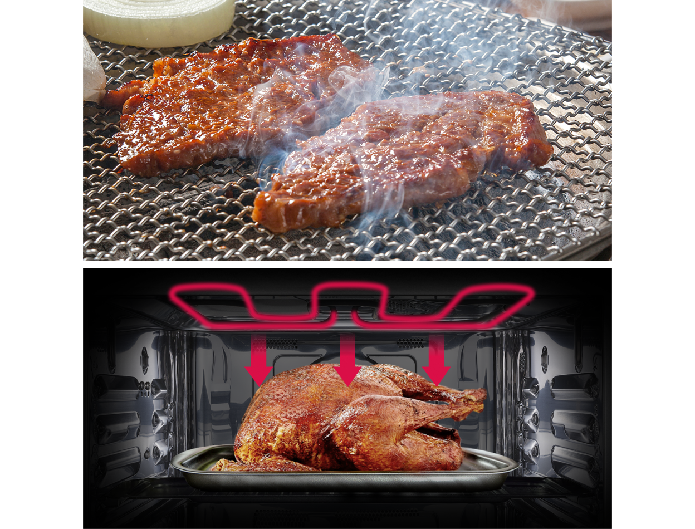
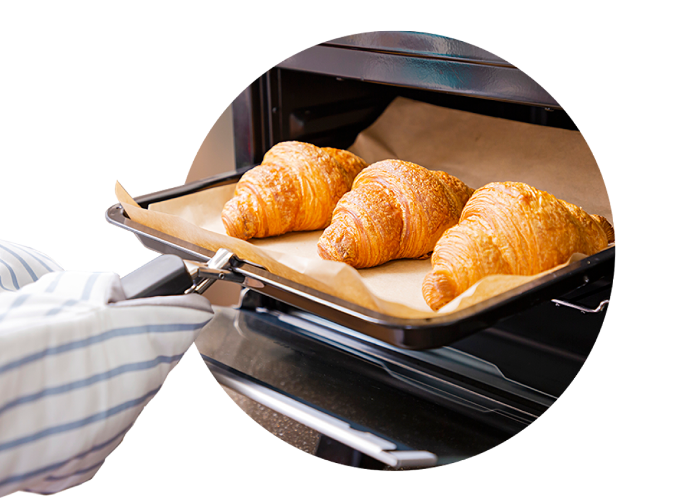
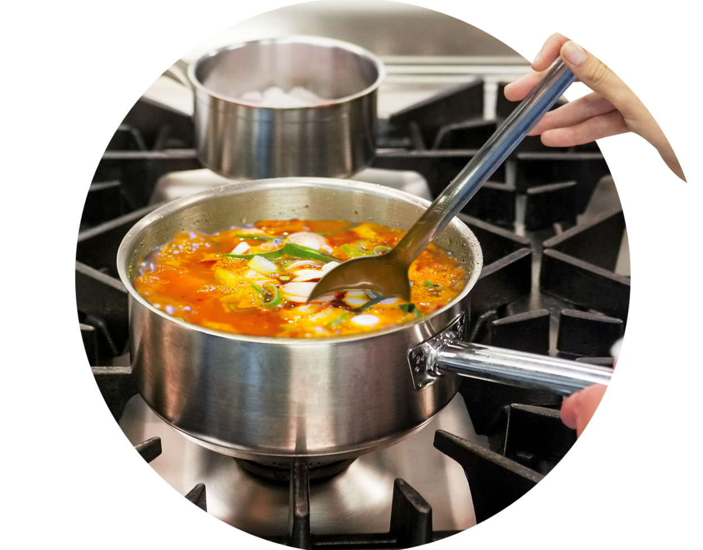
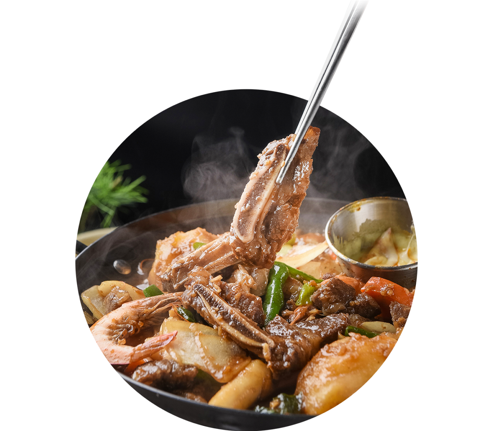
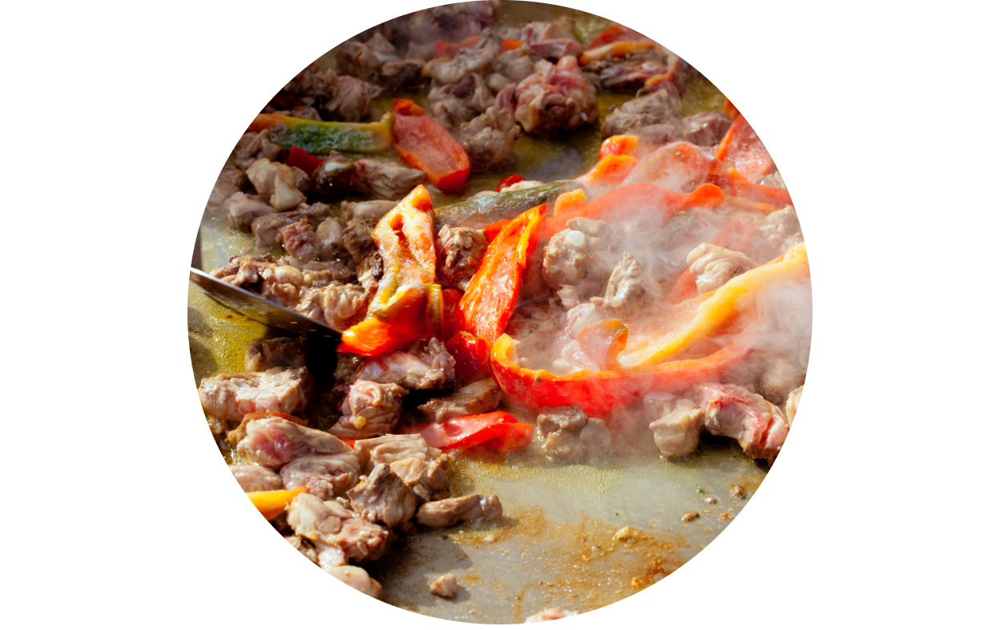
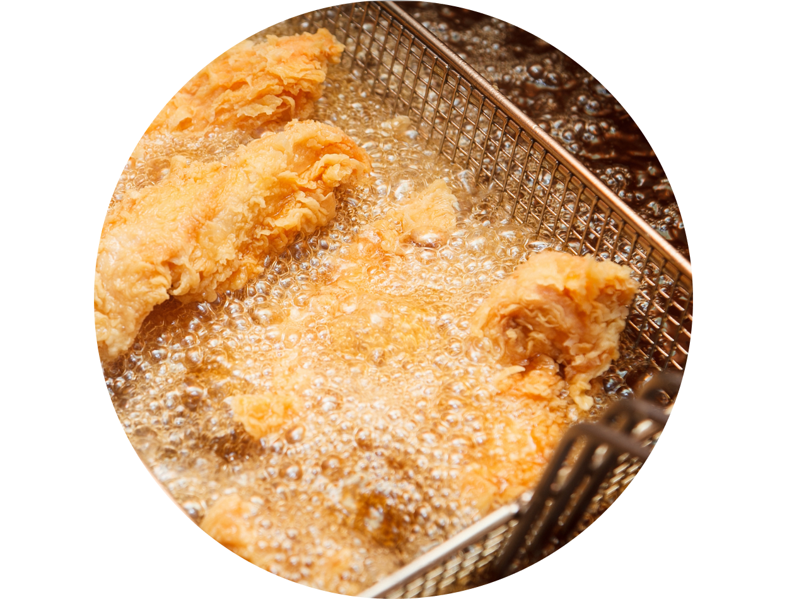
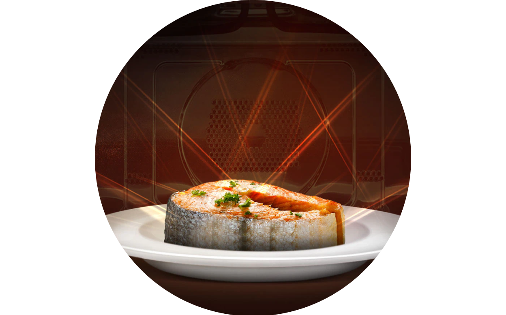

주방광파오븐


보다 더 스마트한 일상
LG ThinQ의 시작

보다 더 스마트한 일상, LG ThinQ
씽큐는 사람과 가전을 AI 기술로 연결하여 더 편리하고 놀라운 일상을 만드는 LG전자의 스마트 홈 플랫폼입니다.
* 본 콘텐츠는 ThinQ 앱의 콘텐츠입니다.
인간은 불을 사용하게 된 이후로 다양한 요리를 개발해 내었죠
음식을 가열하는 다양한 방식과 원리를 이해하면 요리의 맛의 비밀도 찾아낼 수 있어요. 음식을 가열하는 방식의 원리와 그 차이를 알아볼까요?
그릴링과 브로일링
: 적외선 복사

그릴링은 석쇠구이 방식으로 너무 두껍지 않는 육류를 구이 하는 방식이죠. 브로일링은 건열 조리법이라고도 하며 음식을 직화로 굽는 방식이에요.
두 방식 모두 적외선 복사열을 사용하여 직화로 구이 요리를 하는 방식을 말해요.
간단히 구분하자면 그릴링은 열원이 음식 아래에 있고, 브로일링은 위에 있는 구이 방식이죠.
베이킹
: 공기 대류와 복사

오븐에서 빵이나 감자, 육류를 익히는 것으로 습기나 물이 직접 닿지 않고 건열에서 익히는 조리방법을 말해요.
음식을 구울 때 오븐의 뜨거운 벽으로부터의 복사와 뜨거운 공기의 대류가 음식을 가열하도록 하는 방식이죠.
보일링과 시머링 그리고 포칭
: 물의 대류

끓는 물의 열을 활용하는 습열 조리법이에요. 보일링과 그보다 온도를 낮춘 시머링과 포칭은 뜨거운 물의 대류에 의해 음식물을 가열하죠.
시머링은 식재료가 흐트러지지 않도록 조심스럽게 끓이는 조리방법으로 조직을 부드럽게 하여 수프나 스톡을 만들 때 사용하는 방법이고, 포칭은 물이 끓기 직전 끓는점 아래일 때 음식을 넣고 삶는 것으로 끓이고 있는 음식에 향미를 스미게 하여 섬세한 풍미를 만들어 낼 때 사용하죠.
찜
: 증기의 응결과 대류

끓여서 익히되 국물 없이 조리하는 방식이에요. 수증기는 음식물의 표면을 매우 빠르게 끓는점까지 끌어올리고, 또 그 온도를 효율적으로 유지하죠.
찜 요리를 할 때는 주 재료에 갖은 양념을 하여 약간의 물을 넣고 푹 익혀 재료의 맛이 우러나도록 만들죠.
주로 육류를 주 재료로, 채소를 부 재료로 하는 요리 방식이에요.
프라잉과 소테잉
: 전도

주로 기름을 부은 뜨겁게 달궈진 팬으로부터 열전도에 의해 음식물을 가열하는 방법이죠.
일반적으로 프라이팬에 적은 양의 기름을 두르고 지지는 조리법은 팬 프라잉이라고 해요.
소테잉은 적은 양의 기름에서 빠르게 굽는 조리법으로 얇게 썬 스테이크나 두들겨서 부드럽게 만든 고기를 조리할 때 적합해요.
튀김
: 기름의 대류

튀김은 음식이 완전히 잠길 정도로 많은 기름을 사용하여 조리하는 방식이에요. 서양 조리법에서는 딥 프라잉이라고도 하죠.
끓는 기름의 고온에서 짧은 시간에 익혀내는 방식으로 튀기는 동안에 재료의 수분은 증발하고 대신 기름이 흡수되어 독특한 풍미를 줘요.
전자레인지
: 마이크로파 복사

마이크로파를 이용한 전자기 복사를 통해 열을 전달하여 음식을 가열하는 방식을 말해요.
전도나 대류처럼 전통적인 방식으로 열을 가하는 방식이 아닌 전자기파의 파장이 짧은 진동으로 조리물 속 수분의 분자를 진동시켜 열을 발생시키죠.
음식을 가열하는 다양한 원리를 이해하면 요리의 맛을 더 잘 살려낼 수 있어요.


LG ThinQ
ThinQ 하나로 더 좋아지는 일상
일상을 더 편하고 스마트하게 만들어주는 씽큐 앱을 지금 바로 만나보세요.
- #음식
- #요리
- #광파오븐
- #오븐
- #베이킹
- #전자레인지
- #가열
- #음식가열
- #가열방법